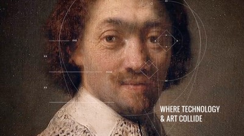

FUTURE POTENTIAL OF CREATIVITY AND TECHNOLOGY
Creating and Technology have an immense future potential. They both if go hand in hand and can revolutionize the world. Creativity is also required a skillset for the future. Let’s look at how Creativity in Combination with Technology will change the future:-

Future Potential for Creativity in Technology
Let’s go through some of the future scopes Creativity has in a sense that people may not be aware about:-
“Ideas are sparked by interaction with your surrounding elements,” he said. “It’s born out of the need to communicate ideas – but that inspiration needs an outlet.”
When we look at the world we live in today, it is easy to see how the technological advances have completely redefines the way we live and communicate. With influx of social media apps, we are now able to talk to virtually any person on any corner of the Earth. Instagram as an example, has allowed users to see live video streams of their friends in faraway places, as well as get a glimpse of the lifestyle of their favourite celebrities. Through social media we have and in future achieve immense connection possibilities.
Creativity is the skill which differentiates a technician from a creator. Creativity is the skill is most sought out by parents for their children future. Creativity is the key component of Holistic Development. As has been in the past Creativity has enhanced present technology, helped in further developing it and also making present technology main line.
Many schools and universities are trying to incorporate creativity in children and syllabus. Big technology giants such as Google have succeeded in creating a workplace culture of creativity. “They are on the edge of new products all the time so they know they need creative input, but they are also heavily systemic,” he says. “There are things to be learned from these companies about giving people time to be creative and showing that you value it as a business.”
We just can’t ignore that Creativity is the skill for the future. And will be the key difference maker in economically successful technology to cutting edge Technology.
Most important reason due to which Creativity is a key component of technology is that it make an unknown cutting edge technology like Optical Computing Streamline. As been has in the past the real reason many technologies like Internet, Computers, Telephones became common essential technologies is CREATIVITY. Creativity tries to automate and simplify the present technology in such a manner that its utility can be correlated by the buyer and is of some importance to them.
Creativity also shines in making a product branded. And is the most important skill in Advertising, which is presently over a trillion dollar industry and is set to grow further.
Turner says there is still no simple answer to the age-old question of whether marketing is an art or a science. Ultimately, automation is driving up the performance of marketing in all its various forms.
“I don’t think the art or the science are mutually exclusive,” he declares. “With the data comes more scope to be genuinely relevant and do so through great creative. Given the way that great brands are doing it, consumer expectations are really high, so there’s a significant benchmark for us to achieve.”
So what can marketers expect in the years ahead, and how can they push the case for creativity as processes become increasingly automated? Ian Liddicoat, global head of data technology and analytics at media agency Zenith, predicts that AI technology will soon permeate all aspects of the customer journey, changing the way marketers do their jobs.
“That will be a major area of focus for a lot of brands and technology companies, and there will also be a lot more integration between organisations like ours and the big technology companies,” he says. “The fact that we can push a machine learned result to a DSP (demand-side advertising platform) today would not have happened even two years ago.”
Automation is definitely freeing up time for us to focus on being more genuinely creative and personalised with our activity.
1. Creativity a key Component to enhance Present Technology

2. Creativity is the skill of the future
3. Making Cutting Edge Technology Streamline

4. Making Branded Content and Advertisement
5. Future Automation